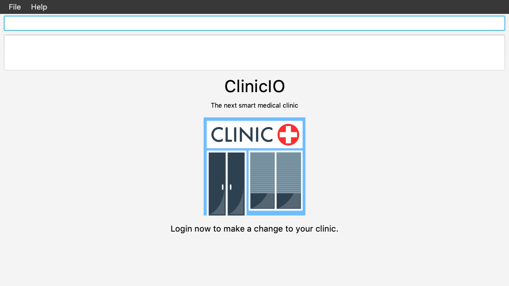

By: W14-1 Since: Sept 2018 Licence: MIT
- 1. Introduction
- 2. Quick Start
- 3. Features
- 3.1. Viewing help :
help - 3.2. Login :
login - 3.3. Adding a patient:
add - 3.4. Listing all patients :
list - 3.5. Editing a patient :
edit - 3.6. Locating patients by name:
find - 3.7. Deleting a patient :
delete - 3.8. Selecting a patient :
select - 3.9. Adding a medicine:
add medicine - 3.10. Finding a medicine by name:
find medicine - 3.11. Removing a medicine by name :
remove medicine - 3.12. Listing entered commands :
history - 3.13. Undoing previous command :
undo - 3.14. Redoing the previously undone command :
redo - 3.15. Clearing all entries :
clear - 3.16. Displaying average statistics :
averages - 3.17. Displaying total statistics :
totals - 3.18. Exiting the program :
exit - 3.19. Saving the data
- 3.20. Encrypting data files
[coming in v2.0]
- 3.1. Viewing help :
- 4. FAQ
- 5. Command Summary
1. Introduction
Working at the front desk in a medical clinic? Meet ClinicIO, a desktop app for you to manage patients' medical record as fast as possible. More importantly, ClinicIO is optimized for Command Line Interface (CLI) while retaining the benefits of a Graphical User Interface (GUI). ClinicIO covers a comprehensive set of actions and is designed to get out of your way! Interested? Jump to the Section 2, “Quick Start” to get started. Enjoy!
2. Quick Start
-
Ensure you have Java version
9or later installed in your Computer. -
Download the latest
clinicio.jarhere. -
Copy the file to the folder you want to use as the home folder for your ClinicIO.
-
Double-click the file to start the app. The GUI should appear in a few seconds.
 -
Type the command in the command box and press Enter to execute it.
e.g. typinghelpand pressing Enter will open the help window. -
Some example commands you can try:
-
list: lists all contacts -
addn/John Doe p/98765432 e/johnd@example.com a/John street, block 123, #01-01: adds a contact namedJohn Doeto the clinic record. -
delete3: deletes the 3rd contact shown in the current list -
exit: exits the app
-
-
Refer to Section 3, “Features” for details of each command.
3. Features
Command Format
-
Words in
UPPER_CASEare the parameters to be supplied by the user e.g. inadd n/NAME,NAMEis a parameter which can be used asadd n/John Doe. -
Items in square brackets are optional e.g
n/NAME [t/TAG]can be used asn/John Doe t/friendor asn/John Doe. -
Items with
… after them can be used multiple times including zero times e.g.[t/TAG]…can be used ast/friend,t/friend t/familyetc. -
Parameters can be in any order e.g. if the command specifies
n/NAME p/PHONE_NUMBER,p/PHONE_NUMBER n/NAMEis also acceptable.
3.1. Viewing help : help
Format: help
3.2. Login : login
Log in to ClinicIO.
Format: login r/ROLE n/NAME pass/PASSWORD
Examples:
-
login r/doctor n/Adam Bell pass/------- -
login r/receptionist n/Mary Jane pass/-------
3.3. Adding a patient: add
Adds a patient to the clinic record
Format: add n/NAME p/PHONE_NUMBER e/EMAIL a/ADDRESS [t/TAG]…
| A patient can have any number of tags (including 0) |
Examples:
-
add n/John Doe p/98765432 e/johnd@example.com a/John street, block 123, #01-01 -
add n/Betsy Crowe t/friend e/betsycrowe@example.com a/Newgate Prison p/1234567 t/criminal
3.4. Listing all patients : list
Shows a list of all patients in the clinic record.
Format: list
3.5. Editing a patient : edit
Edits an existing patient in the clinic record.
Format: edit INDEX [n/NAME] [p/PHONE] [e/EMAIL] [a/ADDRESS] [t/TAG]…
Examples:
-
edit 1 p/91234567 e/johndoe@example.com
Edits the phone number and email address of the 1st patient to be91234567andjohndoe@example.comrespectively. -
edit 2 n/Betsy Crower t/
Edits the name of the 2nd patient to beBetsy Crowerand clears all existing tags.
3.6. Locating patients by name: find
Finds patients whose names contain any of the given keywords.
Format: find KEYWORD [MORE_KEYWORDS]
Examples:
-
find John
ReturnsjohnandJohn Doe -
find Betsy Tim John
Returns any patient having namesBetsy,Tim, orJohn
3.7. Deleting a patient : delete
Deletes the specified patient from the clinic record.
Format: delete INDEX
Examples:
-
list
delete 2
Deletes the 2nd patient in the clinic record. -
find Betsy
delete 1
Deletes the 1st patient in the results of thefindcommand.
3.8. Selecting a patient : select
Selects the patient identified by the index number used in the displayed patient list.
Format: select INDEX
Examples:
-
list
select 2
Selects the 2nd patient in the clinic record. -
find Betsy
select 1
Selects the 1st patient in the results of thefindcommand.
3.9. Adding a medicine: add medicine
Adds a medicine to the medicine inventory
Format: add medicine m/MEDICINE_NAME ty/MEDICINE_TYPE ed/EFFECTIVE_DOSAGE ld/LETHAL_DOSAGE q/QUANTITY [t/TAG]…
| A medicine can have any number of tags (including 0) |
Example:
-
add m/Paracetamol ty/tablet ed/2 ld/8 q/1000 t/take when necessary t/effects last 6 hours
3.10. Finding a medicine by name: find medicine
Find a medicine in the medicine inventory
Format: find medicine MEDICINE_NAME
Example:
-
find ibuprofen
ReturnsIbuprofen
3.11. Removing a medicine by name : remove medicine
Removes the specified medicine from the medicine inventory.
Format: remove medicine MEDICINE_NAME
Example:
-
remove medicine Paracetemol
Removes the Paracetemol entry from the medicine inventory.
3.12. Listing entered commands : history
Lists all the commands that you have entered in reverse chronological order.
Format: history
|
Pressing the ↑ and ↓ arrows will display the previous and next input respectively in the command box. |
3.13. Undoing previous command : undo
Restores the clinic record to the state before the previous undoable command was executed.
Format: undo
|
Undoable commands: those commands that modify the clinic record’s content ( |
Examples:
-
delete 1
list
undo(reverses thedelete 1command) -
select 1
list
undo
Theundocommand fails as there are no undoable commands executed previously. -
delete 1
clear
undo(reverses theclearcommand)
undo(reverses thedelete 1command)
3.14. Redoing the previously undone command : redo
Reverses the most recent undo command.
Format: redo
Examples:
-
delete 1
undo(reverses thedelete 1command)
redo(reapplies thedelete 1command) -
delete 1
redo
Theredocommand fails as there are noundocommands executed previously. -
delete 1
clear
undo(reverses theclearcommand)
undo(reverses thedelete 1command)
redo(reapplies thedelete 1command)
redo(reapplies theclearcommand)
3.15. Clearing all entries : clear
Clears all entries from the clinic record.
Format: clear
3.16. Displaying average statistics : averages
Displays all the statistics that are averages.
Format: averages
3.17. Displaying total statistics : totals
Displays all the statistics that are totals.
Format: totals
3.18. Exiting the program : exit
Exits the program.
Format: exit
3.19. Saving the data
ClinicIO data is saved in the hard disk automatically after any command that changes the data.
There is no need to save manually.
3.20. Encrypting data files [coming in v2.0]
{explain how the user can enable/disable data encryption}
4. FAQ
Q: How do I transfer my data to another Computer?
A: Install the app in the other computer and overwrite the empty data file it creates with the file that contains the data of your previous ClinicIO folder.
5. Command Summary
5.1. ClinicIO Commands
-
Add :
add n/NAME p/PHONE_NUMBER e/EMAIL a/ADDRESS [t/TAG]…
e.g.add n/James Ho p/22224444 e/jamesho@example.com a/123, Clementi Rd, 1234665 t/friend t/colleague -
Averages :
averages -
Totals :
totals -
Clear :
clear -
Delete :
delete INDEX
e.g.delete 3 -
Edit :
edit INDEX [n/NAME] [p/PHONE_NUMBER] [e/EMAIL] [a/ADDRESS] [t/TAG]…
e.g.edit 2 n/James Lee e/jameslee@example.com -
Find :
find KEYWORD [MORE_KEYWORDS]
e.g.find James Jake -
List :
list -
Queue :
queue QINDEX
e.g.queue 2 -
Queues :
queues -
Enqueue :
enqueue INDEX QINDEX
e.g.enqueue 3 1 -
Dequeue :
dequeue QINDEX
e.g.dequeue 4 -
Help :
help -
Select :
select INDEX
e.g.select 2 -
History :
history -
Undo :
undo -
Redo :
redo
5.2. MedicineInventory Commands
-
Add Medicine :
addmedicine m/MEDICINE_NAME ty/MEDICINE_TYPE ed/EFFECTIVE_DOSAGE ld/LETHAL_DOSAGE q/QUANTITY [t/TAG]…
e.g.addmedicine m/Paracetamol ty/tablet ed/2 ld/8 q/1000 t/take when necessary -
Delete Medicine :
deletemedicine MEDICINE_NAME
e.g.deletemedicine Paracetamol -
Find Medicine :
findmedicine MEDICINE_NAME
e.g.findmedicine Paracetamol -
Increase Medicine Quantity :
increasemedicine m/MEDICINE_NAME q/QUANTITY
e.g.increasemedicine m/Paracetamol q/500 -
Decrease Medicine Quantity :
decreasemedicine m/MEDICINE_NAME q/QUANTITY
e.g.decreasemedicine m/Paracetamol q/20